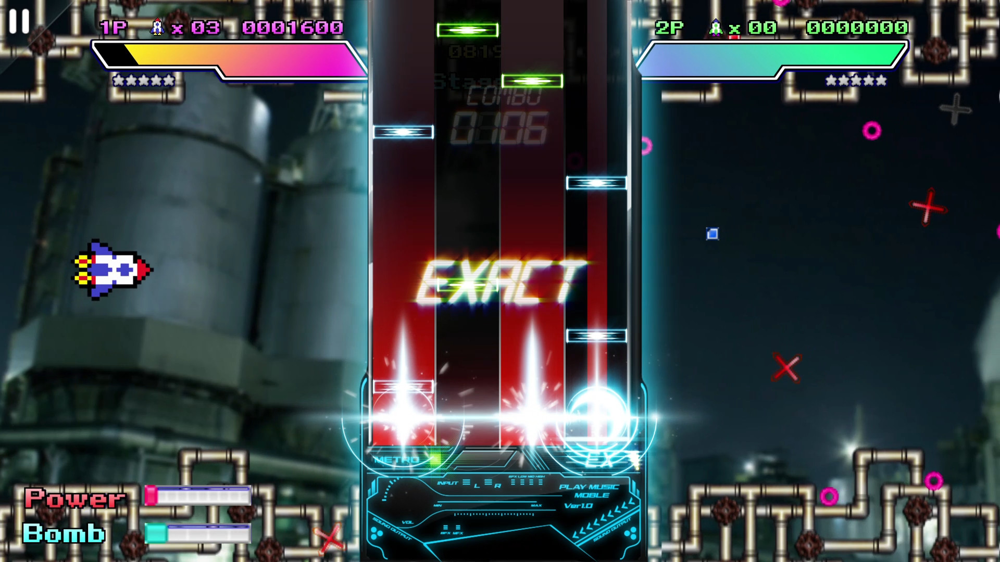

MUSYNX
By: Hinature - April 5, 2026

I will be honest, MUSYNX was not a game I expected to spend as much time on as I did. I picked it up mostly out of curiosity, not really knowing what to expect, and ended up staying for hours just going through song after song. That kind of experience is hard to come by, and it made me want to actually sit down and write about why this game works so well.
MUSYNX is a vertical scrolling rhythm game where notes fall from the top of the screen and you tap, hold, or slide at the right time to match the music. On paper it sounds like every other rhythm game, but the way it feels when you are actually playing is what sets it apart. The controls are responsive, the timing windows feel fair, and there is a certain smoothness to the whole experience that made it easy for me to just lose track of time.
What I personally enjoyed the most is the music selection. MUSYNX has a really varied library that covers electronic, classical, pop, and original compositions. A lot of the tracks have a calm and melodic quality that I did not expect going in. Some rhythm games feel exhausting after a while because everything is loud and intense, but MUSYNX has a good balance of energetic and relaxing tracks. I found myself replaying certain songs just because I genuinely liked the music, not just for the score.

The difficulty range is also worth mentioning. Each song has multiple difficulty levels, and the jump between them feels reasonable. I started on easier difficulties just to get a feel for the note patterns, and gradually worked my way up to harder charts. The harder ones do get quite demanding in terms of timing and finger speed, but it never felt unfair. When I missed notes, it was always because I was not good enough yet, not because the game was being cheap with me.
If there is one thing I can see people criticizing, it is the visual presentation. MUSYNX is very minimal compared to something like Muse Dash. The backgrounds are mostly static and there are not a lot of flashy effects going on during gameplay. Personally, I did not mind this at all. If anything, I think it helped me focus better on the notes. But if you are someone who enjoys a lot of visual energy while playing, MUSYNX might feel a little plain to you.
Overall, MUSYNX is the kind of rhythm game that does not try too hard to impress you and ends up being genuinely enjoyable because of it. The gameplay is clean, the music is good, and it is easy to pick up and play without needing to learn complicated systems. Whether you are new to rhythm games or already experienced, I think MUSYNX is worth giving a try.